Pinata cake

Pourquoi j’appellerai ce gros gâteau surprise « mon gâteau de la rentrée » ? Eh bien je vais vous l’expliquer avant de vous dévoiler la recette de mon pinata cake.
Je ne sais pas vous, mais moi ce gâteau surprise me fait penser à un bon gros gâteau d’anniversaire! C’est d’ailleurs pour cela que je l’ai appelé mon gâteau parfait pour la rentrée. Anniversaire-rentrée? Vous me direz qu’il n’y a pas beaucoup de rapport… En réalité, quand j’étais plus jeune, j’ai toujours trouvé ça injuste que certains enfants de ma classe ne puissent jamais fêter leur anniversaire avec leurs copains d’école parce qu’ils étaient nés en juillet ou en août et que soit eux mêmes partaient en vacances ou que personne n’était jamais là pour répondre aux invitations envoyées… Je me suis donc dit que ces enfants avaient eux aussi droit a un super anniversaire avec un bon gros gâteau (pleins de copains, de jeux et de bonbons) et qu’ils devraient alors renvoyer les invitations pour le fêter à la rentrée! Histoire de ne pas faire qu’un simple layer cake je me suis dit pourquoi ne pas le remplir de plein de bonbons de toutes les couleurs histoire qu’en coupant la première part une belle surprise dégouline de l’intérieur du gâteau! Inutile de vous dire que je n’ai rien inventé. Ce gâteau surprise plein de bonbons existe depuis longtemps déjà chez nos voisins anglo-saxons et porte le nom de pinata cake! Vous pouvez faire un pinata cake de toutes les couleurs comme un rainbow cake ou simplement en partant d’une base de gâteau au yaourt… Peu importe le gâteau et le principe est toujours le même: empiler tout un tas de génoises, faire un trou au centre et le remplir de bonbons!! Rien de très compliqué en soi, il faut juste du temps…^^
Pour info, ce gâteau ne porte pas un nom fantaisiste, il a bel et bien une petite histoire. A l’origine, la piñata (notamment au Mexique) est un récipient rempli de bonbon et accessoirement de jouets. Lors des fêtes d’anniversaires, les enfants frappent successivement la piñata les yeux bandés à l’aide d’un bâton dans le but de faire l’ouvrir pour que toutes les sucreries se trouvant à l’intérieur tombent. Ce gâteau reprend alors cette tradition mais je vous rassure un bon coup de couteau suffit à libérer les bonbons qui se trouvent à l’intérieur 😉
Je vous laisse découvrir la recette en image et j’espère qu’elle vous plaira 🙂
Ingrédients
- Farine - 500g
- Sucre - 560g
- Beurre à temp ambiante - 225g
- Lait - 480ml
- Jus de citron - 7ml = 1càc et demi
- Blancs d'oeufs à temp ambiante - 9
- Levure chimique - 15g
- Sel - 1càc
- Extrait de vanille - 2 càc et demi
- Bonbons - BEAUCOUP!! (une grande poche de m&ms par exemple suffit)
- Cream cheese (philadelphia, St Moret etc..) - 350g
- Mascarpone - 350g
- Crème liquide - 20cl
- Extrait de vanille - 1 càc
- Sucre glace - 120g
- Chunks (pépites de chocolat) - 125g (facultatif)
- Vermicelles, perles multicolores - (facultatif)
Instructions
- Préchauffer le four à 180°C.
- Dans le bol de votre robot muni de la feuille, verser la farine tamisée, la levure et le sel
- Bien mélanger
- Ajouter le sucre
- Régler votre robot à basse vitesse ajouter le beurre mou coupé en morceaux petit à petit
- Battre jusqu’à ce que la totalité du beurre soit bien incorporé (3 minutes)
- Le mélange obtenu est très friable comparable à une pâte à crumble
- Dans un verre doseur mélanger la moitié du lait, l’extrait de vanille et le jus de citron
- Dans un autre bol mélanger le reste de lait avec les BLANCS d’œufs (mélanger avec une fourchette ou un fouet manuel) Oui vous avez bien lu il ne faut pas monter les blancs 🙂
- Augmenter la vitesse de votre robot et ajouter progressivement le mélange lait//extrait de vanille//citron
- Réduire la vitesse de votre robot et ajouter le deuxième mélange contenant le lait et les blancs d’œufs
- Battre pendant 3 bonnes minutes pour le mélange soit bien homogène
- Racler les bords de la cuve avec une spatule s’il y en a sur les rebords
- Mettre du papier sulfurisé au fond du moule et bien bien le beurrer
- Peser la pâte et versez la dans 4 moules de 18cm (bien beurrés !!!!!) ou si vous n'en avez qu'un faites un par un 😉
- Enfourner pendant 20-22 minutes dans le four préchauffé
- Les laisser totalement refroidir
- Quand elles sont froides préparer le glaçage
- 10 min avant de commencer: penser à placer au congélateur la crème liquide et les fouets de votre batteur pour vous assurez d'avoir une belle chantilly du premier coup! Dans un récipient assouplir le cream cheese (philadelphia pour moi) et le mascarpone avec l'extrait de vanille. Réserver Monter la crème en chantilly Ajouter petit à petit le sucre glace Incorporer délicatement le mélange cream cheese-mascarpone à la crème Continuer de battre à grande vitesse. Il faut obtenir un mélange bien homogène Le mélange doit monter à vue d’œil et la crème ne doit pas retomber Réserver au frais si vous ne glacer pas votre gâteau immédiatement
- Dans un récipient assouplir le cream cheese (philadelphia pour moi) et le mascarpone avec l'extrait de vanille. Réserver
- Monter la crème en chantilly
- Ajouter petit à petit le sucre glace
- Incorporer délicatement le mélange cream cheese-mascarpone à la crème
- Continuer de battre à grande vitesse. Il faut obtenir un mélange bien homogène
- Le mélange doit monter à vue d’œil et la crème ne doit pas retomber
- Réserver au frais si vous ne glacer pas votre gâteau immédiatement
- Trouer deux des génoises au centre à l’aide d’un emporte pièce
- Repartir du glaçage sur la première génoise en évitant d’en mettre là ou la deuxième qui sera au dessus sera trouée
- Ajouter des chunks et des confettis sur le glaçage
- Superposer les génoises les unes sur les autres en mettant du glaçage, des chunks et des confettis entre chacune
- Verser des bonbons dans le trous avant de refermer par la dernière génoise
- Tasser légèrement le gâteau en appuyant tout doucement
- Mettre une première fine couche de glaçage sur l’ensemble du gâteau (crumb coat)
- Laisser au frais une bonne heure pour que ça durcisse
- Mettre une deuxième couche de glaçage sur le gâteau
- Laisser prendre au frais à nouveau une bonne heure
- Rajouter du glaçage si vous pensez qu'il est nécessaire d'en rajouter
- Mettre au frais
- Décorer selon vos envies!
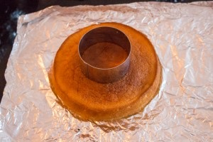
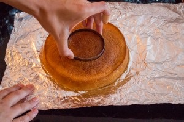
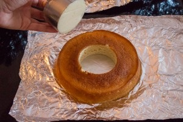
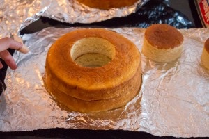
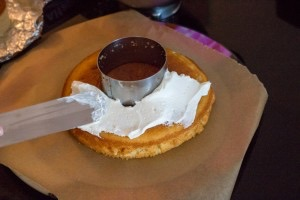
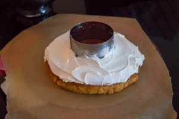
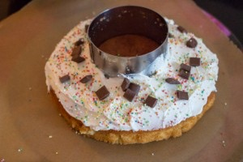
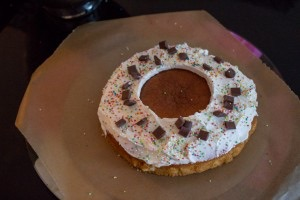
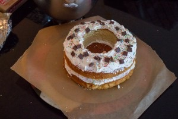
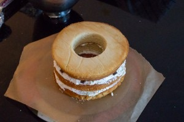
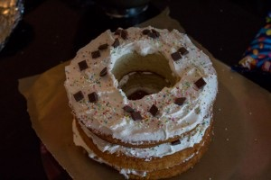
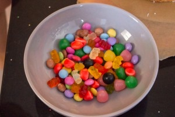
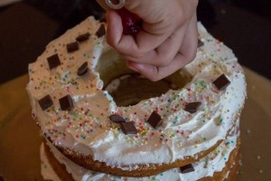
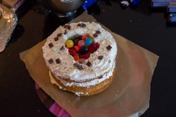
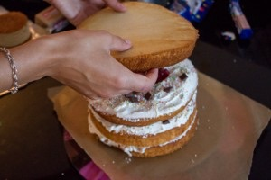
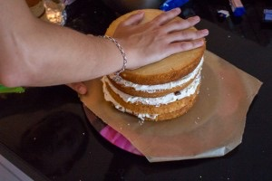
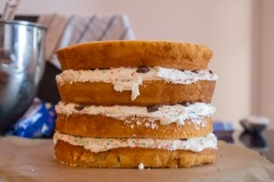
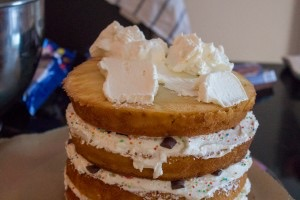
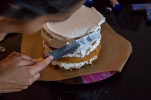
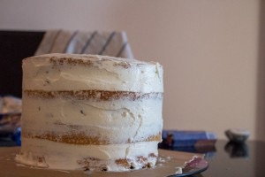
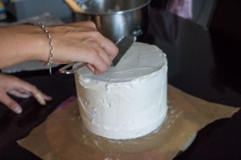
Les tips de la communauté
Gâteau surprise avec bonbons cachés - concept ludique très apprécié, particulièrement pour anniversaires. White cake permet pureté visuelle. Généralement réussi, avec demandes de conseil préparation échelonnée ou rangement bonbons.
Astuces
- Possible faire génoises la veille (film alimentaire au frais)
- Glaçage blanc pour contraste visuel maximal avec bonbons
- Monter gâteau le jour de service pour fraîcheur optimale
- Bonbons ne dessèchent pas 1-2 jours complets
Variantes suggérées
- un moule avec le trou au centre ? (je sais pas si tu vois ce que je veux dire comme moule lol)
Ajustements signalés
- Garniture et glaçage à préparer le jour même (pas la veille) pour conservant bonbons optimaux